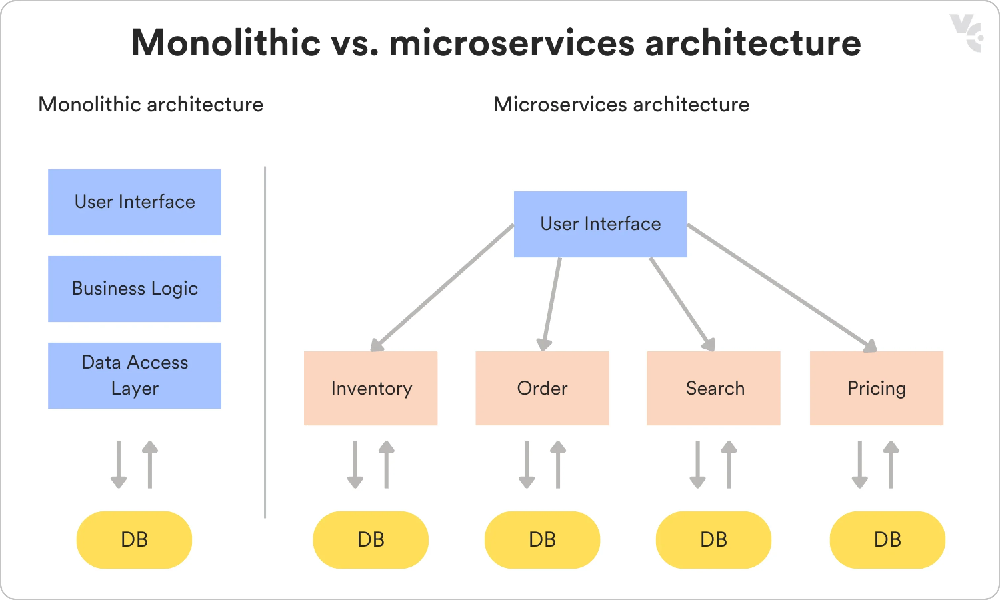
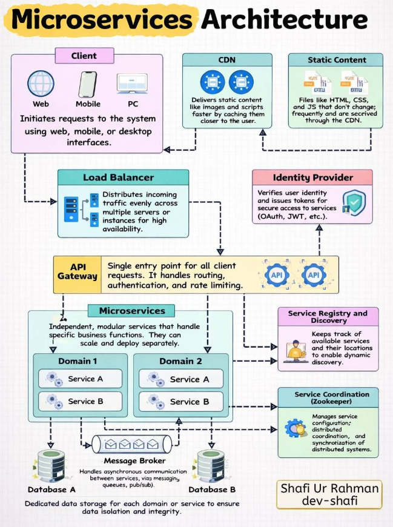
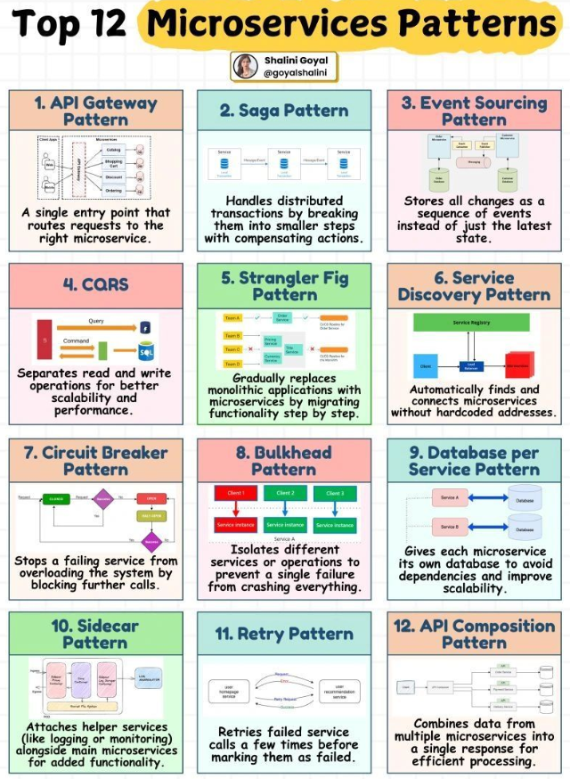

System Design Mastery
Master scalable systems with premium insights
🧩 Microservices Architecture
1️⃣ What is it?
Microservices architecture is a design approach where a large application is split into many small, independent services, each responsible for a specific functionality.
Each service:
- Runs independently
- Has its own database (often)
- Communicates with other services via APIs or events.
Basic
flow:
Client → API Gateway → Microservices → Database
Example services:
- User Service
- Order Service
- Payment Service
- Notification Service
Each service can be developed, deployed, and scaled independently.

🔍 Want to compare Monolithic
vs Microservices architecture?
Check out our detailed comparison guide:
⚙️ Key Characteristics
1️⃣ Small Independent Services
Each microservice performs a single responsibility.
Example:
User Service → manages users
Payment Service → processes payments
Order Service → handles orders
2️⃣ Independent Deployment
Services can be deployed without affecting others.
Example:
Update Payment Service
(No need to redeploy entire
system)
3️⃣ API-based Communication
Microservices communicate using APIs or messaging systems.
Example:
Order Service → calls Payment Service API
Protocols used:
- REST
- gRPC
- Messaging (Kafka, RabbitMQ)
4️⃣ Independent Databases
Each service often has its own database.
Example:
User Service → User DB
Order Service → Order DB
Payment Service → Payment DB
This avoids tight coupling.

✅ Advantages
1️⃣ Scalability
Each service can scale
independently.
Example:
Payment Service → scale
more
Notification
Service → scale less
2️⃣ Faster Development
Multiple teams can work in
parallel.
3️⃣ Fault Isolation
If one service fails, others can still
work.
Example:
Notification service fails
Orders still work
4️⃣ Technology Flexibility
Each service can use different
technologies.
Example:
User Service → Java
Payment Service →
Go
Recommendation → Python
⚠️ Disadvantages
1️⃣ System Complexity
Many services increase complexity.
2️⃣ Network Overhead
Services communicate over network → latency.
3️⃣ Data Consistency Challenges
Distributed data leads to eventual
consistency.
4️⃣ Deployment & Monitoring Complexity
Requires strong DevOps
practices.
Tools often used:
- Kubernetes
- Docker
- Prometheus
- Grafana

5️⃣ Key components in Microservices
🔹 API Gateway
Single entry point for clients.
Handles:
- Routing
- Authentication
- Rate limiting
🔹 Service Discovery
Services dynamically find each other.
Example tools:
- Consul
- Eureka
- Kubernetes DNS
🔹 Load Balancer
Distributes traffic among service instances.
🔹 Message Queue / Event Broker
Enables asynchronous communication.
Examples:
- Kafka
- RabbitMQ
🔹 Database per Service
Each service manages its own data storage.
3️⃣ What breaks without Microservices ?
Without microservices in large systems:
- Entire application must be redeployed for small changes
- Scaling one component requires scaling whole system
- Large codebases become hard to maintain
- Development teams block each other
Example:
If order service fails in a monolith, the entire application
may crash.

microservices patterns
🧠 summary
Microservices
architecture splits a large application into small independent
services, each responsible
for a specific business capability.
Services communicate through
APIs or message queues
and can be developed and deployed independently.
It improves
scalability, flexibility,
and team productivity but adds operational complexity.
Check out this link for differences between all architectures